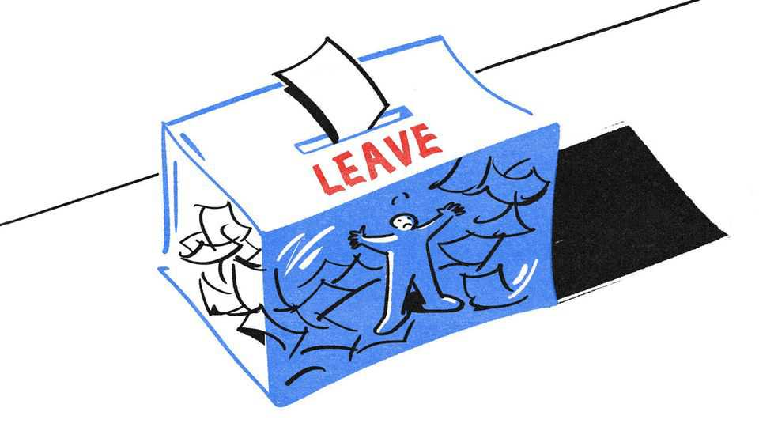
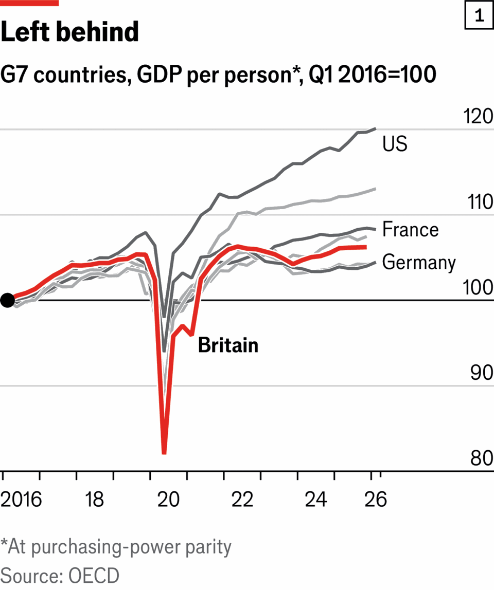

Ten years on, how the Brexit vote changed Britain
In many small ways, and mostly for the worse
June 18th 2026

At 12.15am on June 24th 2016, Sunderland became the poster child for Brexit. The port on England’s north-eastern coast was the first city to declare that it had voted to leave the European Union. Over 60% of Sunderland’s inhabitants wanted out, despite veiled warnings from Nissan that Brexit might cause it to close its car factory (a major local employer). As a working-class area whose shipbuilding glory days were long gone, the port came to embody left-behind Britain’s desire to give global elites a bloody nose.

Economists try to quantify the damage from Brexit. Some say GDP per person is 8% lower than it could have been; others say 2.5%. Growth in most other G7 rich economies has been faster (see chart 1). In Sunderland Remain’s worst economic fears did not come to pass (the Nissan factory limps on) but leaving has quickened the decline of British manufacturing (the plant now produces 46% fewer cars). Sunderland has not become a deregulated Singapore-on-the-Wear.
Brexit has brought myriad day-to-day annoyances. Dominic Gardner, who runs a road-repair business in Sunderland, finds it harder to import parts. The paperwork is “phenomenally frustrating”. His colleague Mike complains about long passport queues when on holiday. (Mike’s Polish neighbour is “laughing” because he “goes straight through security”.) From exporting cheese to taking your dog abroad, life in Brexit Britain is simply harder.
This is clearest in manufacturing. Much like the rest of Europe, Britain’s industrial base was shrinking before 2016, squeezed by Chinese competition and high energy costs. But since then Britain’s share of global goods exports has fallen particularly quickly, dropping from 2.6% to 2.1% in 2025. That is a 17% decrease (over the same period, the EU’s share fell by only 6%). Trade with the continent is mostly tariff-free under the Brexit deal, but is buried in rules and paperwork, from customs declarations to rules-of-origin requirements. For a country that sent 48% of goods exports to the EU in 2016, that is a big new burden.
The paperwork has hit small businesses hardest. Research by Thomas Sampson of the LSE and his co-authors found that the new trade rules barely affected the largest firms, which had teams to deal with the extra hoops. But the deal caused the smallest fifth of British business to export 30% less to the EU relative to the rest of the world. More than 16,000 firms—14% of all businesses exporting to the continent—stopped selling to the EU altogether.
One was FlueCube, a chimney-coverings business in Kent. Its founder, Ashley Martin, had thought, “Europe was going to be my growth.” He had started shipping to Ireland, France and the Netherlands. But post-Brexit, he says, “I lost control of delivery times and customs charges.” Eventually he gave up exporting. Two years ago he changed his company’s name from FlueCube Europe to FlueCube Limited.
Luckily for Britain, the world economy is increasingly services-based, an area of comparative British advantage. Britain’s services exports rose in real terms by 47% between 2016 and 2025 (see chart 2). Britain remains consigliere to the world, its legal, engineering and advertising expertise snapped up by sheikhs and tech tycoons. In Sunderland, a new film studio is being built, not far from the national arena for e-sports opening this summer.
But this shift happened despite Brexit. The biggest growth has been in industries with few trade barriers: advertising exports more than doubled between 2015 and 2022. Growth has been slower wherever Brexit erected new frictions (see chart 3). Swati Dhingra, an economist, found that British exports in services with new barriers declined by 16% compared with other trade flows. The City has proved more resilient than many predicted, remaining the world’s second-largest financial centre. Yet the loss of passporting has made it harder to sell services into the EU. Financial and insurance services now constitute 24% of services exports, down from 32% in 2016.
Brexit also triggered what John Springford, another economist, calls “an investment strike”. For decades, Britain has nearly always had the lowest capital investment in the G7. Brexit uncertainty compounded this, causing investment to flatline for six years. The strike never fully ended: Brexit anxiety faded, only to be replaced by fears over tax rises and Donald Trump’s trade wars. By starving Britons of better machines and infrastructure, low investment has suppressed productivity growth, benighting the broader economy.
It would be churlish to argue that Brexit has hurt everyone. Puffins and lobsters are among the winners. Even the odd human has benefited. Kevin Tetchner, a gas-equipment manufacturer (and Brexiteer) from Sunderland, raves about simpler processes for certifying the safety of his products. On a larger scale, the government has used its new freedoms to transform agricultural policy. Farmers no longer get paid simply for owning land but have to deliver environmental goods. This has been a success (the EU should take note). Tech entrepreneurs say that it is easier to build an AI company in Britain than it is in the EU.
But Britain has mostly failed to pursue the radical deregulation that small-state Brexiteers promised. European rules restricting Britons’ working hours remain in force. The Great Crested Newt still bedevils housing developers under EU habitats regulations that have stayed on the books. It turns out that it was not Eurocrats preventing the red-tape bonfire, but British politicians too scared of vested interests.
The most visible change is one almost nobody predicted in 2016. Boris Johnson relaxed restrictions on non-EU migrants in 2021, unleashing a surge of arrivals from India, Nigeria and elsewhere. At its peak net immigration from outside the EU reached 1m people, in 2023 (see chart 4). More than 460,000 students and their dependants came that year, plugging holes in universities’ leaky finances. Many of the 471,000 people arriving on work visas came to fill vacancies in health and social care.
Sunderland, which voted overwhelmingly to take back control of immigration, has been on the crest of the “Boriswave”. In 2019 people from outside Britain or the EU held 3% of jobs in the city. By 2024 that figure was 10%. At the university, for every ten Brits there are four Nepalis, two Uzbeks and at least one Indian (although many of these attend remotely). Residents have mixed feelings. Anti-immigration protests sparked riots in 2024; in May this year Reform UK, a populist-right party, won a landslide in local elections.

Ten years after the referendum, both Britain and Sunderland remain divided. Mr Tetchner is glad he voted for Brexit but feels promises were broken. “The whole point was to take control. We didn’t do that.” Most Britons feel regret: 57% believe Britain was wrong to leave, according to a YouGov poll. Over time, attitudes towards the EU have warmed (see chart 5). Median weekly pay for those working in Sunderland is lower now in real terms than in 2016.
According to polling by More in Common, 43% of Britons now think that leaving the EU has made their daily life worse and just 11% think it has made it better (see chart 6). Mr Gardner, the road-repairer, is annoyed. “Brexit was fixing a problem we didn’t have.” But although he would prefer to rejoin the EU, he reflects, “Practically it will never ever happen.” He pauses. “We are stuck now.”■